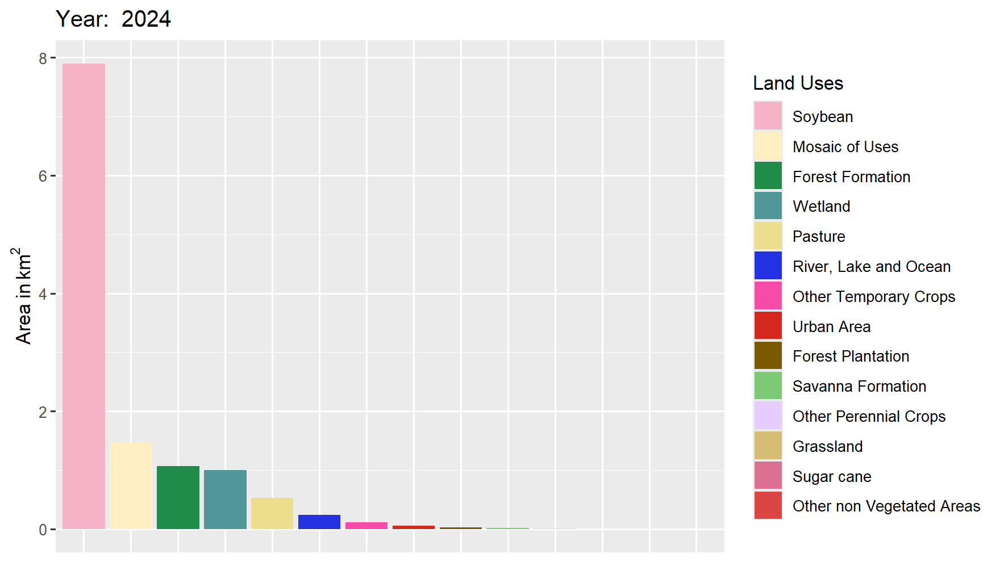

5 Data, areas and maps
In this part, every analysis in the package is applied, one after another, to a
12.5 km² hexagon centred on the UFSCar Lagoa do Sino campus in Buri, São Paulo,
using the MapBiomas Collection 10 annual maps from 1985 to 2024. The maps object
ships with the package (it is stored under the name mapas):
load(system.file("examples", "mapa_exemplo.Rdata", package = "biomastats"))
maps <- mapasArea by class
get_area() measures the area of each class in each year, accounting for the
true area of every pixel, and returns both the table (aggregate_data) and a
plot of the series:
areas <- get_area(maps, plot_type = "areaplot")
areas$time_series
In four decades, the landscape switched its productive base. In 1985, pasture covered 7.2 km², 58% of the area; by 2024, only 0.5 km² remained. Over the same period, soybean, absent in 1985, grew to 7.9 km² and came to dominate the landscape. Forest formation shrank from 200 ha to 107 ha, a loss of 47%.
Maps
With land_vis(), this transformation shows up on the map of each year, with
the official MapBiomas legend and colours:


Composition in one year
To summarise the composition of a single year, land_dist() draws a bar chart
(type = "barplot") or a pie chart (type = "pie"):
land_dist(areas, year = 2024, type = "barplot")